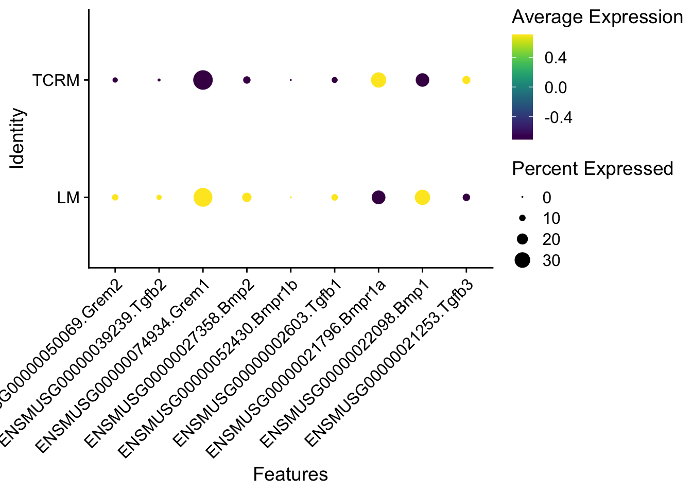

Analyse balbc LN samples
Mechthild Lütge
24 July 2020
Last updated: 2020-08-19
Checks: 6 1
Knit directory: TCRM_Christina/
This reproducible R Markdown analysis was created with workflowr (version 1.6.2). The Checks tab describes the reproducibility checks that were applied when the results were created. The Past versions tab lists the development history.
The R Markdown file has unstaged changes. To know which version of the R Markdown file created these results, you’ll want to first commit it to the Git repo. If you’re still working on the analysis, you can ignore this warning. When you’re finished, you can run wflow_publish to commit the R Markdown file and build the HTML.
Great job! The global environment was empty. Objects defined in the global environment can affect the analysis in your R Markdown file in unknown ways. For reproduciblity it’s best to always run the code in an empty environment.
The command set.seed(20200518) was run prior to running the code in the R Markdown file. Setting a seed ensures that any results that rely on randomness, e.g. subsampling or permutations, are reproducible.
Great job! Recording the operating system, R version, and package versions is critical for reproducibility.
Nice! There were no cached chunks for this analysis, so you can be confident that you successfully produced the results during this run.
Great job! Using relative paths to the files within your workflowr project makes it easier to run your code on other machines.
Great! You are using Git for version control. Tracking code development and connecting the code version to the results is critical for reproducibility.
The results in this page were generated with repository version d642ee2. See the Past versions tab to see a history of the changes made to the R Markdown and HTML files.
Note that you need to be careful to ensure that all relevant files for the analysis have been committed to Git prior to generating the results (you can use wflow_publish or wflow_git_commit). workflowr only checks the R Markdown file, but you know if there are other scripts or data files that it depends on. Below is the status of the Git repository when the results were generated:
Ignored files:
Ignored: .DS_Store
Ignored: .Rhistory
Ignored: .Rproj.user/
Ignored: analysis/figure/
Ignored: output/.DS_Store
Unstaged changes:
Modified: analysis/analyseMedLN_balbc.Rmd
Note that any generated files, e.g. HTML, png, CSS, etc., are not included in this status report because it is ok for generated content to have uncommitted changes.
These are the previous versions of the repository in which changes were made to the R Markdown (analysis/analyseMedLN_balbc.Rmd) and HTML (docs/analyseMedLN_balbc.html) files. If you’ve configured a remote Git repository (see ?wflow_git_remote), click on the hyperlinks in the table below to view the files as they were in that past version.
| File | Version | Author | Date | Message |
|---|---|---|---|---|
| Rmd | d642ee2 | mluetge | 2020-08-18 | update Makefile |
| html | d642ee2 | mluetge | 2020-08-18 | update Makefile |
load packages
suppressPackageStartupMessages({
library(SingleCellExperiment)
library(tidyverse)
library(Seurat)
library(magrittr)
library(dplyr)
library(purrr)
library(ggplot2)
library(here)
library(runSeurat3)
library(ggsci)
library(pheatmap)
library(ggpubr)
library(viridis)
})set dir
basedir <- here()
metaDat <- read_tsv(paste0(basedir, "/metadata_LN.txt"), col_names = T)load and assign samples
assignSamples <- function(smpNam, basedirSmp, smpGrp, smpBatch, smpLoc){
smpNamFull <- list.files(path = paste0(basedirSmp, "/data/"),
pattern = paste0(smpNam, ".*_seurat.rds"))
seuratSmp <- readRDS(paste0(basedirSmp, "/data/", smpNamFull))
seuratSmp$grp <- smpGrp
seuratSmp$batch <- smpBatch
seuratSmp$loc <- smpLoc
return(seuratSmp)
}
####################################################################
for(i in 1:length(metaDat$Sample)){
seuratX <- assignSamples(smpNam = metaDat$Sample[i],
basedirSmp = basedir,
smpGrp = metaDat$group[i],
smpBatch = metaDat$batch[i],
smpLoc = metaDat$location[i])
if(exists("seurat")){
seurat <- merge(x = seurat, y = seuratX, project = "balbC_LN")
}else{
seurat <- seuratX
}
}
remove(seuratX)run clustering and DR and remove contaminating cells
## remove contaminants
seurat <- subset(seurat, subset = ENSMUSG00000026395.Ptprc >0, invert=T)
seurat <- subset(seurat, subset = ENSMUSG00000003379.Cd79a >0, invert=T)
seurat <- subset(seurat, subset = ENSMUSG00000040592.Cd79b >0, invert=T)
seurat <- subset(seurat, subset = ENSMUSG00000076928.Trac >0, invert=T)
seurat <- subset(seurat, subset = ENSMUSG00000032094.Cd3d >0, invert=T)
seurat <- rerunSeurat3(seurat)Modularity Optimizer version 1.3.0 by Ludo Waltman and Nees Jan van Eck
Number of nodes: 9195
Number of edges: 305672
Running Louvain algorithm...
Maximum modularity in 10 random starts: 0.9274
Number of communities: 13
Elapsed time: 0 seconds
Modularity Optimizer version 1.3.0 by Ludo Waltman and Nees Jan van Eck
Number of nodes: 9195
Number of edges: 305672
Running Louvain algorithm...
Maximum modularity in 10 random starts: 0.8909
Number of communities: 18
Elapsed time: 0 seconds
Modularity Optimizer version 1.3.0 by Ludo Waltman and Nees Jan van Eck
Number of nodes: 9195
Number of edges: 305672
Running Louvain algorithm...
Maximum modularity in 10 random starts: 0.8759
Number of communities: 20
Elapsed time: 0 seconds
Modularity Optimizer version 1.3.0 by Ludo Waltman and Nees Jan van Eck
Number of nodes: 9195
Number of edges: 305672
Running Louvain algorithm...
Maximum modularity in 10 random starts: 0.9098
Number of communities: 16
Elapsed time: 0 secondsdat <- data.frame(table(seurat$dataset))
colnames(dat) <- c("dataset", "all")
seuratSub <- subset(seurat, subset = ENSMUSG00000074934.Grem1 >0) ## 0 cells
dat2 <- data.frame(table(seuratSub$dataset))
colnames(dat2) <- c("dataset", "Grem1")
dat <- dat %>% left_join(., dat2, by=c("dataset"))
seuratSub <- subset(seurat, subset = ENSMUSG00000050069.Grem2 >0) ## 2 cells
dat2 <- data.frame(table(seuratSub$dataset))
colnames(dat2) <- c("dataset", "Grem2")
dat <- dat %>% left_join(., dat2, by=c("dataset"))
seuratSub <- subset(seurat, subset = ENSMUSG00000027358.Bmp2 >0) ## 418 cells
dat2 <- data.frame(table(seuratSub$dataset))
colnames(dat2) <- c("dataset", "Bmp2")
dat <- dat %>% left_join(., dat2, by=c("dataset"))
seuratSub <- subset(seurat,subset = ENSMUSG00000021835.Bmp4 >0) ## 1341 cells
dat2 <- data.frame(table(seuratSub$dataset))
colnames(dat2) <- c("dataset", "Bmp4")
dat <- dat %>% left_join(., dat2, by=c("dataset"))
seuratSub <- subset(seurat,subset= ENSMUSG00000021796.Bmpr1a >0) ## 1092 cells
dat2 <- data.frame(table(seuratSub$dataset))
colnames(dat2) <- c("dataset", "Bmpr1a")
dat <- dat %>% left_join(., dat2, by=c("dataset"))
seuratSub <- subset(seurat, subset=ENSMUSG00000052430.Bmpr1b >0) ## 2 cells
dat2 <- data.frame(table(seuratSub$dataset))
colnames(dat2) <- c("dataset", "Bmpr1b")
dat <- dat %>% left_join(., dat2, by=c("dataset"))
seuratSub <- subset(seurat,subset= ENSMUSG00000067336.Bmpr2 >0) ## 2201 cells
dat2 <- data.frame(table(seuratSub$dataset))
colnames(dat2) <- c("dataset", "Bmpr2")
dat <- dat %>% left_join(., dat2, by=c("dataset"))
dat[is.na(dat)] <-0
dat_fin <- dat %>%
bind_rows(summarise_all(., funs(if(is.numeric(.)) sum(.) else "total")))
knitr::kable(dat_fin)| dataset | all | Grem1 | Grem2 | Bmp2 | Bmp4 | Bmpr1a | Bmpr1b | Bmpr2 |
|---|---|---|---|---|---|---|---|---|
| 12_20200723_Mu_LN_Lin_neg_FSC_Balbc_v3 | 1645 | 179 | 200 | 217 | 172 | 439 | 7 | 887 |
| 13_20200723_Hu_LN_Lin_neg_FSC_v3 | 1996 | 398 | 161 | 325 | 263 | 385 | 0 | 917 |
| 15_20200729_Mu_balbc_medisLN_LM_stromal_cells_v3 | 5554 | 2062 | 551 | 909 | 1515 | 1445 | 2 | 1870 |
| total | 9195 | 2639 | 912 | 1451 | 1950 | 2269 | 9 | 3674 |
## total 71484 cellscheck QC
colDat <- pal_npg()(length(unique(seurat$dataset)))
names(colDat) <- unique(seurat$dataset)
sce <- as.SingleCellExperiment(seurat)
plotQC2 <- function(sce, feature){
p <- gghistogram(data = as.data.frame(sce@colData),
x=feature,
bins=70,
#title=unique(sce$dataset),
fill = "dataset",
palette = colDat,
legend = "right")
return(p)
}
plotQC3 <- function(sce, feature){
p <- gghistogram(data = as.data.frame(sce@colData),
x=feature,
y = "..density..",
bins=70,
fill = "dataset",
palette = colDat,
add_density = TRUE,
legend = "right")
return(p)
}
plotQC2(sce, "total_counts")
| Version | Author | Date |
|---|---|---|
| d642ee2 | mluetge | 2020-08-18 |
plotQC3(sce, "total_counts")
| Version | Author | Date |
|---|---|---|
| d642ee2 | mluetge | 2020-08-18 |
plotQC2(sce, "total_features_by_counts")
| Version | Author | Date |
|---|---|---|
| d642ee2 | mluetge | 2020-08-18 |
plotQC3(sce, "total_features_by_counts")
| Version | Author | Date |
|---|---|---|
| d642ee2 | mluetge | 2020-08-18 |
#plotQC2(sce, "pct_counts_Mt")
#plotQC3(sce, "pct_counts_Mt")
plotQC2(sce, "pct_counts_in_top_500_features")
| Version | Author | Date |
|---|---|---|
| d642ee2 | mluetge | 2020-08-18 |
plotQC3(sce, "pct_counts_in_top_500_features")
| Version | Author | Date |
|---|---|---|
| d642ee2 | mluetge | 2020-08-18 |
#plotQC2(sce, "pct_counts_endogenous")
#plotQC3(sce, "pct_counts_endogenous")
#plotQC2(sce, "total_features_by_counts_Mt")
#plotQC3(sce, "total_features_by_counts_Mt")
#plotQC2(sce, "total_counts_Mt")
#plotQC3(sce, "total_counts_Mt")
#plotQC2(sce, "pct_counts_in_top_500_features_endogenous")
#plotQC3(sce, "pct_counts_in_top_500_features_endogenous")subset on med LN
seurat <- subset(seurat, loc == "medLN")
seurat <- rerunSeurat3(seurat)Modularity Optimizer version 1.3.0 by Ludo Waltman and Nees Jan van Eck
Number of nodes: 3641
Number of edges: 115656
Running Louvain algorithm...
Maximum modularity in 10 random starts: 0.9499
Number of communities: 12
Elapsed time: 0 seconds
Modularity Optimizer version 1.3.0 by Ludo Waltman and Nees Jan van Eck
Number of nodes: 3641
Number of edges: 115656
Running Louvain algorithm...
Maximum modularity in 10 random starts: 0.9109
Number of communities: 15
Elapsed time: 0 seconds
Modularity Optimizer version 1.3.0 by Ludo Waltman and Nees Jan van Eck
Number of nodes: 3641
Number of edges: 115656
Running Louvain algorithm...
Maximum modularity in 10 random starts: 0.8922
Number of communities: 16
Elapsed time: 0 seconds
Modularity Optimizer version 1.3.0 by Ludo Waltman and Nees Jan van Eck
Number of nodes: 3641
Number of edges: 115656
Running Louvain algorithm...
Maximum modularity in 10 random starts: 0.9309
Number of communities: 11
Elapsed time: 0 seconds## remove cluster with lymphocytes and epithelial cells:
seurat <- subset(seurat, idents = c("3", "10", "6"), invert=T)
## rerun DR
seurat <- RunPCA(object = seurat, npcs = 30, verbose = FALSE)
seurat <- RunTSNE(object = seurat, reduction = "pca", dims = 1:20)
seurat <- RunUMAP(object = seurat, reduction = "pca", dims = 1:20)color vectors
colPal <- pal_igv()(length(levels(seurat)))
colGrp <- pal_jama()(length(unique(seurat$grp)))
colSmp <- pal_uchicago()(length(unique(seurat$dataset)))
names(colPal) <- levels(seurat)
names(colGrp) <- unique(seurat$grp)
names(colSmp) <- unique(seurat$dataset)vis data
clusters
DimPlot(seurat, reduction = "umap", cols=colPal)+
theme_bw() +
theme(axis.text = element_blank(), axis.ticks = element_blank(),
panel.grid.minor = element_blank()) +
xlab("UMAP1") +
ylab("UMAP2")
| Version | Author | Date |
|---|---|---|
| d642ee2 | mluetge | 2020-08-18 |
group
DimPlot(seurat, reduction = "umap", group.by = "grp", cols=colGrp)+
theme_bw() +
theme(axis.text = element_blank(), axis.ticks = element_blank(),
panel.grid.minor = element_blank()) +
xlab("UMAP1") +
ylab("UMAP2")
| Version | Author | Date |
|---|---|---|
| d642ee2 | mluetge | 2020-08-18 |
Sample
DimPlot(seurat, reduction = "umap", group.by = "dataset", cols=colSmp)+
theme_bw() +
theme(axis.text = element_blank(), axis.ticks = element_blank(),
panel.grid.minor = element_blank()) +
xlab("UMAP1") +
ylab("UMAP2")
| Version | Author | Date |
|---|---|---|
| d642ee2 | mluetge | 2020-08-18 |
marker genes
seurat_markers_all <- FindAllMarkers(object = seurat, assay ="RNA",
only.pos = TRUE, min.pct = 0.25,
logfc.threshold = 0.25,
test.use = "wilcox")avgHeatmap <- function(seurat, selGenes, colVecIdent, colVecCond=NULL,
ordVec=NULL, gapVecR=NULL, gapVecC=NULL,cc=FALSE,
cr=FALSE, condCol=FALSE){
selGenes <- selGenes$gene
## assay data
clusterAssigned <- as.data.frame(Idents(seurat)) %>%
dplyr::mutate(cell=rownames(.))
colnames(clusterAssigned)[1] <- "ident"
seuratDat <- GetAssayData(seurat)
## genes of interest
genes <- data.frame(gene=rownames(seurat)) %>%
mutate(geneID=gsub("^.*\\.", "", gene)) %>% filter(geneID %in% selGenes)
## matrix with averaged cnts per ident
logNormExpres <- as.data.frame(t(as.matrix(
seuratDat[which(rownames(seuratDat) %in% genes$gene),])))
logNormExpres <- logNormExpres %>% dplyr::mutate(cell=rownames(.)) %>%
dplyr::left_join(.,clusterAssigned, by=c("cell")) %>%
dplyr::select(-cell) %>% dplyr::group_by(ident) %>%
dplyr::summarise_all(mean)
logNormExpresMa <- logNormExpres %>% dplyr::select(-ident) %>% as.matrix()
rownames(logNormExpresMa) <- logNormExpres$ident
logNormExpresMa <- t(logNormExpresMa)
rownames(logNormExpresMa) <- gsub("^.*?\\.","",rownames(logNormExpresMa))
## remove genes if they are all the same in all groups
ind <- apply(logNormExpresMa, 1, sd) == 0
logNormExpresMa <- logNormExpresMa[!ind,]
genes <- genes[!ind,]
## color columns according to cluster
annotation_col <- as.data.frame(gsub("(^.*?_)","",
colnames(logNormExpresMa)))%>%
dplyr::mutate(celltype=gsub("(_.*$)","",colnames(logNormExpresMa)))
colnames(annotation_col)[1] <- "col1"
annotation_col <- annotation_col %>%
dplyr::mutate(cond = gsub("(^[0-9]_?)","",col1)) %>%
dplyr::select(cond, celltype)
rownames(annotation_col) <- colnames(logNormExpresMa)
ann_colors = list(
cond = colVecCond,
celltype=colVecIdent)
if(is.null(ann_colors$cond)){
annotation_col$cond <- NULL
}
## adjust order
logNormExpresMa <- logNormExpresMa[selGenes,]
if(is.null(ordVec)){
ordVec <- levels(seurat)
}
logNormExpresMa <- logNormExpresMa[,ordVec]
## scaled row-wise
pheatmap(logNormExpresMa, scale="row" ,treeheight_row = 0, cluster_rows = cr,
cluster_cols = cc,
color = colorRampPalette(c("#2166AC", "#F7F7F7", "#B2182B"))(50),
annotation_col = annotation_col, cellwidth=15, cellheight=10,
annotation_colors = ann_colors, gaps_row = gapVecR, gaps_col = gapVecC)
}cluster cnts
seurat$cluster_plus_grp <- paste0(seurat$seurat_clusters, "_", seurat$grp)
dat_grp <- data.frame(table(seurat$grp))
dat_cl <- data.frame(table(seurat$seurat_clusters, seurat$grp))
dat_cl <- spread(dat_cl, Var2, Freq) %>%
mutate(FreqLM=LM/dat_grp$Freq[which(dat_grp$Var1=="LM")]) %>%
mutate(FreqTCRM=TCRM/dat_grp$Freq[which(dat_grp$Var1=="TCRM")])
knitr::kable(dat_cl)| Var1 | LM | TCRM | FreqLM | FreqTCRM |
|---|---|---|---|---|
| 0 | 247 | 441 | 0.1617551 | 0.3043478 |
| 1 | 303 | 335 | 0.1984283 | 0.2311939 |
| 2 | 554 | 10 | 0.3628029 | 0.0069013 |
| 3 | 0 | 0 | 0.0000000 | 0.0000000 |
| 4 | 58 | 264 | 0.0379830 | 0.1821946 |
| 5 | 180 | 89 | 0.1178782 | 0.0614217 |
| 6 | 0 | 0 | 0.0000000 | 0.0000000 |
| 7 | 72 | 145 | 0.0471513 | 0.1000690 |
| 8 | 77 | 124 | 0.0504257 | 0.0855763 |
| 9 | 36 | 41 | 0.0235756 | 0.0282954 |
| 10 | 0 | 0 | 0.0000000 | 0.0000000 |
vis Grem and BMPs
Grem1
p <- FeaturePlot(seurat, reduction = "umap",
features = "ENSMUSG00000074934.Grem1",
cols=c("lightgrey", "darkred"),
order = T)+
theme(legend.position="right")
p
| Version | Author | Date |
|---|---|---|
| d642ee2 | mluetge | 2020-08-18 |
Grem2
p <- FeaturePlot(seurat, reduction = "umap",
features = "ENSMUSG00000050069.Grem2",
cols=c("lightgrey", "darkred"),
order = T)+
theme(legend.position="right")
p
| Version | Author | Date |
|---|---|---|
| d642ee2 | mluetge | 2020-08-18 |
Bmp2
p <- FeaturePlot(seurat, reduction = "umap",
features = "ENSMUSG00000027358.Bmp2",
cols=c("lightgrey", "darkred"),
order = T)+
theme(legend.position="right")
p
| Version | Author | Date |
|---|---|---|
| d642ee2 | mluetge | 2020-08-18 |
Bmp4
p <- FeaturePlot(seurat, reduction = "umap",
features = "ENSMUSG00000021835.Bmp4",
cols=c("lightgrey", "darkred"),
order = T)+
theme(legend.position="right")
p
| Version | Author | Date |
|---|---|---|
| d642ee2 | mluetge | 2020-08-18 |
Bmpr1a
p <- FeaturePlot(seurat, reduction = "umap",
features = "ENSMUSG00000021796.Bmpr1a",
cols=c("lightgrey", "darkred"),
order = T)+
theme(legend.position="right")
p
| Version | Author | Date |
|---|---|---|
| d642ee2 | mluetge | 2020-08-18 |
Bmpr2
p <- FeaturePlot(seurat, reduction = "umap",
features = "ENSMUSG00000052430.Bmpr1b",
cols=c("lightgrey", "darkred"),
order = T)+
theme(legend.position="right")
p
| Version | Author | Date |
|---|---|---|
| d642ee2 | mluetge | 2020-08-18 |
plot selected marker
selMarker <- list(LZFDC = c("Fcer2a", "Cr2", "Cxcl13", "Madcam1"),
DZFDC = c("Pdlim3", "Crym"),
MRC = c("Tnfsf11", "Cavin2", "Hamp2"),
TRC_TBRC = c("Prelp", "Fmod", "Ccl21a",
"Ccl19", "Vtn", "Ifitm1"),
iTBRC = c("Cd74", "H2-Ab1", "H2-Aa"),
Cxcl9BRC = c("Cxcl9", "Cxcl10", "Irgm1", "Irf7"),
medRC = c("Cxcl1", "Cxcl2","Ccl2", "Ccl7", "Nr4a1"),
adventitial = c("Cd34", "Ly6c1", "Igfbp6"),
endothelial=c("Pecam1"))
selGenes <- data.frame(gene=unlist(selMarker)) %>%
rownames_to_column(var="grp") %>% mutate(Grp=gsub(".{1}$", "", grp))
grpCnt <- selGenes %>% group_by(Grp) %>% summarise(cnt=n())
gapR <- data.frame(Grp=unique(selGenes$Grp)) %>%
left_join(.,grpCnt, by="Grp") %>% mutate(cumSum=cumsum(cnt))
#ordVec <- levels(seurat)[c(10,7,6,8,2,1,5,4,3,9)]
pOut <- avgHeatmap(seurat = seurat, selGenes = selGenes,
colVecIdent = colPal,
# ordVec=ordVec,
gapVecR=gapR$cumSum, gapVecC=NULL,cc=T,
cr=F, condCol=F)
| Version | Author | Date |
|---|---|---|
| d642ee2 | mluetge | 2020-08-18 |
DE genes FRCs
seuratSub <- subset(seurat, idents=c("0", "2", "9"))
Idents(seuratSub) <- seuratSub$grp
DEgenes <- FindAllMarkers(object = seuratSub, assay ="RNA",
only.pos = TRUE, min.pct = 0.25,
logfc.threshold = 0.25,
test.use = "wilcox")
### plot DE genes top 15 avg logFC
# DEGenesAll <- DEgenes %>% group_by(cluster) %>%
# top_n(15, avg_logFC)
#
# Idents(seurat) <- seurat$seurat_clusters
# avgHeatmap(seurat = seurat, selGenes = DEGenesAll,
# colVecIdent = colPal,
# ordVec=levels(seurat),
# gapVecR=NULL, gapVecC=NULL,cc=T,
# cr=T, condCol=F)vis DE genes
scatterplot
allID <- seuratSub
Idents(allID) <- seuratSub$grp
avg.allID <- AverageExpression(allID, show.progress = FALSE)
avg.allID <- log1p(avg.allID$RNA)
avg.allID$gene <- rownames(avg.allID)
## expression frequency
GeneFreqSel <- as.data.frame(GetAssayData(allID, assay = "RNA",
slot = "data")) %>%
tibble::rownames_to_column(var="gene") %>% mutate(count=rowSums(.!=0)-1) %>%
mutate(countFreq=count/ncol(allID)) %>% select(gene,count, countFreq) %>%
dplyr::filter(countFreq>=0.1)
signGenes2 <- DEgenes %>%
dplyr::filter(p_val_adj<0.01 & (avg_logFC > 0.25 | avg_logFC < -0.25))
signGenes3 <- DEgenes %>% group_by(cluster) %>% top_n(., 15, avg_logFC) %>%
mutate(labelNam=gsub("^.*\\.", "", gene)) %>% filter(labelNam != "1")
genes.to.label = c("Bmp1", "Bmp2", "Bmpr1a", "Grem1", "Grem2",
"Tgfb1", "Tgfb2", "Tgfb3", signGenes3$labelNam)
avg.allID <- avg.allID %>% mutate(labelNam=gsub("^.*\\.", "", gene)) %>%
mutate(colourGrp=ifelse(labelNam %in% genes.to.label, "lab",
ifelse(gene%in%signGenes2$gene, "sig", "notSig"))) %>%
dplyr::filter(gene%in%GeneFreqSel$gene)
p_allID <- ggscatter(avg.allID, x="TCRM", y="LM",
color = "colourGrp",
#fill = "colourGrp",
palette = c("#660000", "#808080", "#FF3333"),
label="labelNam",
label.select = genes.to.label,
repel = F,
label.rectangle=F,
xlab="TCRM",
ylab = "LM",
title="",
legend="none",
font.label=10,
alpha=0.9,
xlim = c(0, 5),
ylim = c(0, 5),
size=0.5)
p_allID 
| Version | Author | Date |
|---|---|---|
| d642ee2 | mluetge | 2020-08-18 |
genes.to.label = c("Bmp1", "Bmp2", "Bmpr1a", "Grem1", "Grem2",
"Tgfb1", "Tgfb2", "Tgfb3")
avg.allID <- avg.allID %>% mutate(labelNam=gsub("^.*\\.", "", gene)) %>%
mutate(colourGrp=ifelse(labelNam %in% genes.to.label, "lab",
ifelse(gene%in%signGenes2$gene, "sig", "notSig"))) %>%
dplyr::filter(gene%in%GeneFreqSel$gene)
p_allID <- ggscatter(avg.allID, x="TCRM", y="LM",
color = "colourGrp",
#fill = "colourGrp",
palette = c("#660000", "#808080", "#FF3333"),
label="labelNam",
label.select = genes.to.label,
repel = F,
label.rectangle=F,
xlab="TCRM",
ylab = "LM",
title="",
legend="none",
font.label=10,
alpha=0.9,
xlim = c(0, 5),
ylim = c(0, 5),
size=0.5)
p_allID 
| Version | Author | Date |
|---|---|---|
| d642ee2 | mluetge | 2020-08-18 |
Dotplot cond
Idents(seuratSub) <- seuratSub$grp
genesSel <- data.frame(gene=rownames(seuratSub)) %>%
mutate(labelNam=gsub("^.*\\.", "", gene)) %>%
filter(labelNam %in% genes.to.label)
DotPlot(seuratSub, features = genesSel$gene, group.by= "grp") +
RotatedAxis() +
scale_color_viridis(option = "D")
| Version | Author | Date |
|---|---|---|
| d642ee2 | mluetge | 2020-08-18 |
clusterwise Dotplot cond
Idents(seuratSub) <- seuratSub$seurat_clusters
genesSel <- data.frame(gene=rownames(seuratSub)) %>%
mutate(labelNam=gsub("^.*\\.", "", gene)) %>%
filter(labelNam %in% genes.to.label)
DotPlot(seuratSub, features = genesSel$gene, group.by= "cluster_plus_grp") +
RotatedAxis() +
scale_color_viridis(option = "D") 
selected genes heatmap across FRC cluster
### all FRC cluster here!!
seuratSub <- subset(seurat, idents=c("0", "2", "9", "4"))
Idents(seuratSub) <- seuratSub$seurat_clusters
colnames(genesSel) <- c("geneID", "gene")
pOut <- avgHeatmap(seurat = seuratSub, selGenes = genesSel,
colVecIdent = colPal,
# ordVec=ordVec,
gapVecR=NULL, gapVecC=NULL,cc=T,
cr=T, condCol=F)
save objects
Idents(seurat) <- seurat$seurat_clusters
saveRDS(seurat, file = paste0(basedir, "/data/BalbcMedLN_seurat.rds"))
write.table(seurat_markers_all,
file=paste0(basedir, "/data/BalbcMedLN_markerGenes.txt"),
row.names = FALSE, col.names = TRUE, quote = FALSE, sep = "\t")
write.table(DEgenes,
file=paste0(basedir, "/data/BalbcMedLN_FRC_DEGenes.txt"),
row.names = FALSE, col.names = TRUE, quote = FALSE, sep = "\t")session info
sessionInfo()R version 4.0.0 (2020-04-24)
Platform: x86_64-apple-darwin17.0 (64-bit)
Running under: macOS Catalina 10.15.4
Matrix products: default
BLAS: /Library/Frameworks/R.framework/Versions/4.0/Resources/lib/libRblas.dylib
LAPACK: /Library/Frameworks/R.framework/Versions/4.0/Resources/lib/libRlapack.dylib
locale:
[1] en_US.UTF-8/en_US.UTF-8/en_US.UTF-8/C/en_US.UTF-8/en_US.UTF-8
attached base packages:
[1] parallel stats4 stats graphics grDevices utils datasets methods base
other attached packages:
[1] viridis_0.5.1 viridisLite_0.3.0 ggpubr_0.4.0
[4] pheatmap_1.0.12 ggsci_2.9 runSeurat3_0.1.0
[7] here_0.1 magrittr_1.5 Seurat_3.2.0
[10] forcats_0.5.0 stringr_1.4.0 dplyr_1.0.0
[13] purrr_0.3.4 readr_1.3.1 tidyr_1.1.0
[16] tibble_3.0.3 ggplot2_3.3.2 tidyverse_1.3.0
[19] SingleCellExperiment_1.10.1 SummarizedExperiment_1.18.2 DelayedArray_0.14.1
[22] matrixStats_0.56.0 Biobase_2.48.0 GenomicRanges_1.40.0
[25] GenomeInfoDb_1.24.2 IRanges_2.22.2 S4Vectors_0.26.1
[28] BiocGenerics_0.34.0
loaded via a namespace (and not attached):
[1] readxl_1.3.1 backports_1.1.8 workflowr_1.6.2 plyr_1.8.6
[5] igraph_1.2.5 lazyeval_0.2.2 splines_4.0.0 listenv_0.8.0
[9] digest_0.6.25 htmltools_0.5.0 fansi_0.4.1 tensor_1.5
[13] cluster_2.1.0 ROCR_1.0-11 limma_3.44.3 openxlsx_4.1.5
[17] globals_0.12.5 modelr_0.1.8 colorspace_1.4-1 blob_1.2.1
[21] rvest_0.3.5 ggrepel_0.8.2 haven_2.3.1 xfun_0.15
[25] crayon_1.3.4 RCurl_1.98-1.2 jsonlite_1.7.0 spatstat_1.64-1
[29] spatstat.data_1.4-3 survival_3.2-3 zoo_1.8-8 ape_5.4
[33] glue_1.4.1 polyclip_1.10-0 gtable_0.3.0 zlibbioc_1.34.0
[37] XVector_0.28.0 leiden_0.3.3 car_3.0-8 future.apply_1.6.0
[41] abind_1.4-5 scales_1.1.1 DBI_1.1.0 rstatix_0.6.0
[45] miniUI_0.1.1.1 Rcpp_1.0.5 xtable_1.8-4 reticulate_1.16
[49] foreign_0.8-80 rsvd_1.0.3 htmlwidgets_1.5.1 httr_1.4.1
[53] RColorBrewer_1.1-2 ellipsis_0.3.1 ica_1.0-2 farver_2.0.3
[57] pkgconfig_2.0.3 uwot_0.1.8 dbplyr_1.4.4 deldir_0.1-28
[61] labeling_0.3 tidyselect_1.1.0 rlang_0.4.7 reshape2_1.4.4
[65] later_1.1.0.1 munsell_0.5.0 cellranger_1.1.0 tools_4.0.0
[69] cli_2.0.2 generics_0.0.2 broom_0.7.0 ggridges_0.5.2
[73] evaluate_0.14 fastmap_1.0.1 yaml_2.2.1 goftest_1.2-2
[77] knitr_1.29 fs_1.4.2 fitdistrplus_1.1-1 zip_2.0.4
[81] RANN_2.6.1 pbapply_1.4-2 future_1.18.0 nlme_3.1-148
[85] whisker_0.4 mime_0.9 xml2_1.3.2 compiler_4.0.0
[89] rstudioapi_0.11 curl_4.3 plotly_4.9.2.1 png_0.1-7
[93] ggsignif_0.6.0 spatstat.utils_1.17-0 reprex_0.3.0 stringi_1.4.6
[97] highr_0.8 RSpectra_0.16-0 lattice_0.20-41 Matrix_1.2-18
[101] vctrs_0.3.2 pillar_1.4.6 lifecycle_0.2.0 lmtest_0.9-37
[105] RcppAnnoy_0.0.16 data.table_1.12.8 cowplot_1.0.0 bitops_1.0-6
[109] irlba_2.3.3 httpuv_1.5.4 patchwork_1.0.1 R6_2.4.1
[113] promises_1.1.1 rio_0.5.16 KernSmooth_2.23-17 gridExtra_2.3
[117] codetools_0.2-16 MASS_7.3-51.6 assertthat_0.2.1 rprojroot_1.3-2
[121] withr_2.2.0 sctransform_0.2.1 GenomeInfoDbData_1.2.3 mgcv_1.8-31
[125] hms_0.5.3 grid_4.0.0 rpart_4.1-15 rmarkdown_2.3
[129] carData_3.0-4 Rtsne_0.15 git2r_0.27.1 shiny_1.5.0
[133] lubridate_1.7.9 date()[1] "Wed Aug 19 14:57:49 2020"
sessionInfo()R version 4.0.0 (2020-04-24)
Platform: x86_64-apple-darwin17.0 (64-bit)
Running under: macOS Catalina 10.15.4
Matrix products: default
BLAS: /Library/Frameworks/R.framework/Versions/4.0/Resources/lib/libRblas.dylib
LAPACK: /Library/Frameworks/R.framework/Versions/4.0/Resources/lib/libRlapack.dylib
locale:
[1] en_US.UTF-8/en_US.UTF-8/en_US.UTF-8/C/en_US.UTF-8/en_US.UTF-8
attached base packages:
[1] parallel stats4 stats graphics grDevices utils datasets methods base
other attached packages:
[1] viridis_0.5.1 viridisLite_0.3.0 ggpubr_0.4.0
[4] pheatmap_1.0.12 ggsci_2.9 runSeurat3_0.1.0
[7] here_0.1 magrittr_1.5 Seurat_3.2.0
[10] forcats_0.5.0 stringr_1.4.0 dplyr_1.0.0
[13] purrr_0.3.4 readr_1.3.1 tidyr_1.1.0
[16] tibble_3.0.3 ggplot2_3.3.2 tidyverse_1.3.0
[19] SingleCellExperiment_1.10.1 SummarizedExperiment_1.18.2 DelayedArray_0.14.1
[22] matrixStats_0.56.0 Biobase_2.48.0 GenomicRanges_1.40.0
[25] GenomeInfoDb_1.24.2 IRanges_2.22.2 S4Vectors_0.26.1
[28] BiocGenerics_0.34.0
loaded via a namespace (and not attached):
[1] readxl_1.3.1 backports_1.1.8 workflowr_1.6.2 plyr_1.8.6
[5] igraph_1.2.5 lazyeval_0.2.2 splines_4.0.0 listenv_0.8.0
[9] digest_0.6.25 htmltools_0.5.0 fansi_0.4.1 tensor_1.5
[13] cluster_2.1.0 ROCR_1.0-11 limma_3.44.3 openxlsx_4.1.5
[17] globals_0.12.5 modelr_0.1.8 colorspace_1.4-1 blob_1.2.1
[21] rvest_0.3.5 ggrepel_0.8.2 haven_2.3.1 xfun_0.15
[25] crayon_1.3.4 RCurl_1.98-1.2 jsonlite_1.7.0 spatstat_1.64-1
[29] spatstat.data_1.4-3 survival_3.2-3 zoo_1.8-8 ape_5.4
[33] glue_1.4.1 polyclip_1.10-0 gtable_0.3.0 zlibbioc_1.34.0
[37] XVector_0.28.0 leiden_0.3.3 car_3.0-8 future.apply_1.6.0
[41] abind_1.4-5 scales_1.1.1 DBI_1.1.0 rstatix_0.6.0
[45] miniUI_0.1.1.1 Rcpp_1.0.5 xtable_1.8-4 reticulate_1.16
[49] foreign_0.8-80 rsvd_1.0.3 htmlwidgets_1.5.1 httr_1.4.1
[53] RColorBrewer_1.1-2 ellipsis_0.3.1 ica_1.0-2 farver_2.0.3
[57] pkgconfig_2.0.3 uwot_0.1.8 dbplyr_1.4.4 deldir_0.1-28
[61] labeling_0.3 tidyselect_1.1.0 rlang_0.4.7 reshape2_1.4.4
[65] later_1.1.0.1 munsell_0.5.0 cellranger_1.1.0 tools_4.0.0
[69] cli_2.0.2 generics_0.0.2 broom_0.7.0 ggridges_0.5.2
[73] evaluate_0.14 fastmap_1.0.1 yaml_2.2.1 goftest_1.2-2
[77] knitr_1.29 fs_1.4.2 fitdistrplus_1.1-1 zip_2.0.4
[81] RANN_2.6.1 pbapply_1.4-2 future_1.18.0 nlme_3.1-148
[85] whisker_0.4 mime_0.9 xml2_1.3.2 compiler_4.0.0
[89] rstudioapi_0.11 curl_4.3 plotly_4.9.2.1 png_0.1-7
[93] ggsignif_0.6.0 spatstat.utils_1.17-0 reprex_0.3.0 stringi_1.4.6
[97] highr_0.8 RSpectra_0.16-0 lattice_0.20-41 Matrix_1.2-18
[101] vctrs_0.3.2 pillar_1.4.6 lifecycle_0.2.0 lmtest_0.9-37
[105] RcppAnnoy_0.0.16 data.table_1.12.8 cowplot_1.0.0 bitops_1.0-6
[109] irlba_2.3.3 httpuv_1.5.4 patchwork_1.0.1 R6_2.4.1
[113] promises_1.1.1 rio_0.5.16 KernSmooth_2.23-17 gridExtra_2.3
[117] codetools_0.2-16 MASS_7.3-51.6 assertthat_0.2.1 rprojroot_1.3-2
[121] withr_2.2.0 sctransform_0.2.1 GenomeInfoDbData_1.2.3 mgcv_1.8-31
[125] hms_0.5.3 grid_4.0.0 rpart_4.1-15 rmarkdown_2.3
[129] carData_3.0-4 Rtsne_0.15 git2r_0.27.1 shiny_1.5.0
[133] lubridate_1.7.9